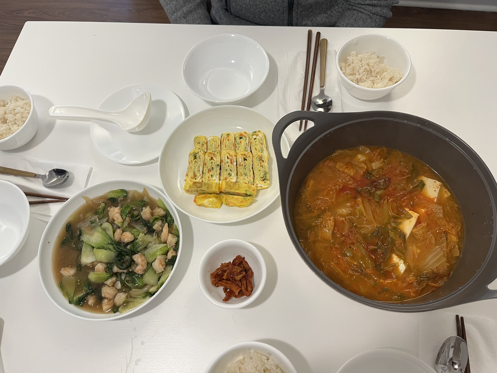

Kimchi Jjigae (Korean Kimchi Soup)

There are so many ways to make Kimchijjigae. I have several recipes, but this is a good one to feed a crowd as Spam is a relatively cheaper protein option. I never took a photo of my Kimchi jjigae before. I'll update the photo soon.
Servings:10-12
Ingredients
- 2 cans of Spam
- 5 cups of Kimchi (preferably well fermented one)
- 1 onion
- 1 zucchini
- 1 cup of mushrooms of your choice (I prefer dried shirataki)
- 2 soft tofu
- 1 dashi pack
- 2 Tbs soy sauce
- 2 Tbs fish sauce
Steps
- In a large dutch oven, stir fry cubed spam
- Once the spam is brown and they let out some oil, add chopped kimchi and onion
- Once onion looks transculent and kimchi looks cooked, add water, dashi pack, 2 Tbs of soy sauce and 2 Tbs of Korean fish sauce
- Once the soup boils, reduce the heat to medium and let it boil for another 15-20mins
- Add chopped zuccini and musrooms and let it boil for another 10min
- Add cubed tofu and let it boil for another 10min
- Serve with rice!